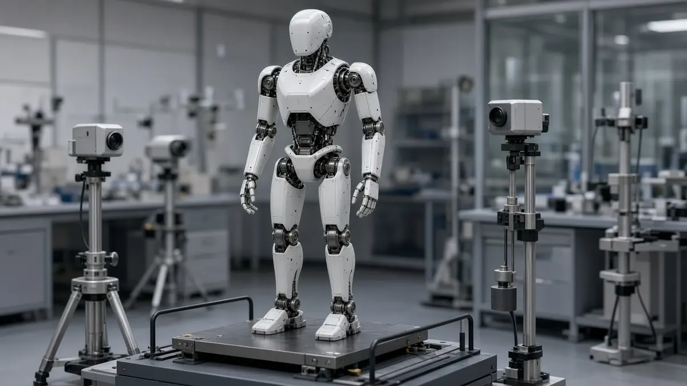

Policy
China expects over 100,000 humanoid robots built in 2026 as first national standards approach
Short answer: A senior Chinese industry ministry official said on 19 October 2026 that China expects to produce more than 100,000 humanoid robots this year, China's State Council Information Office (SCIO) reported. Separately, China's first six national standards for humanoid robots, announced in mid-October, take effect on 1 April 2027.
According to SCIO, Wei Wei, director general of the Department of Science and Technology at the Ministry of Industry and Information Technology, told a Beijing press conference that China had developed more than 400 humanoid models by the end of June, with production above 40,000 units. He said products are being tested and deployed in more than 300 priority scenarios, including warehousing, logistics, catering, retail and household services.
The ministry plans to encourage retailers and other businesses to open their facilities to robot testing, to publish a 2026 edition of its guidelines for building a humanoid-robot standards system, and to set up a high-level open-source community, SCIO reported. Wei also said it will strengthen monitoring and testing of product quality, cybersecurity and data security while advancing ethical governance.
On the standards, CCTV reported on 16 October, citing the State Administration for Market Regulation, that six national standards were approved: five technical-requirements standards covering a humanoid's body, system architecture, environment perception and decision-making, plus one standard for simulation test platforms. MEKAWIRE, reading the national standards database, says they are recommended rather than mandatory, were issued on 28 September, and that Unitree, UBTech and Xiaomi's robot unit are listed among the drafters of all six.
